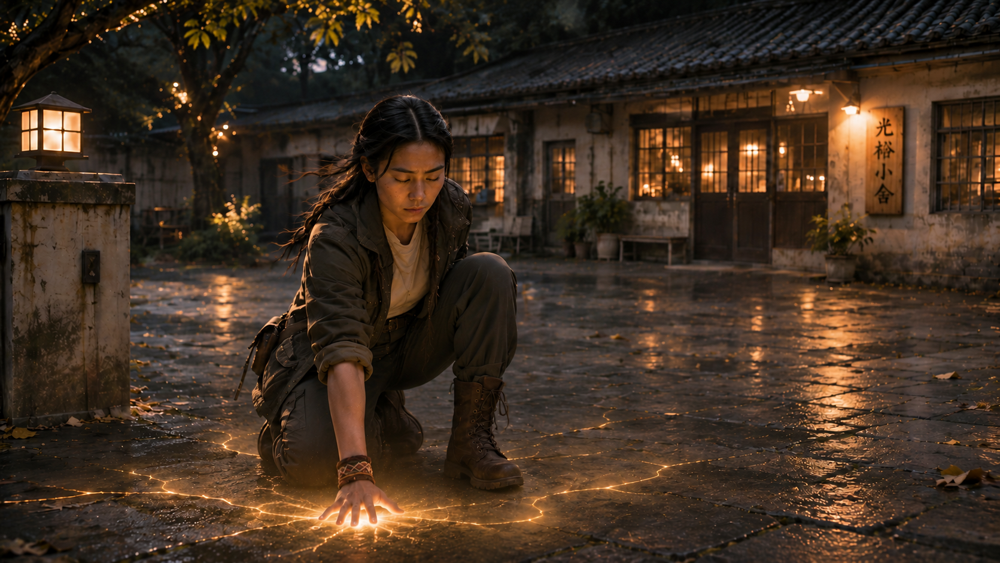
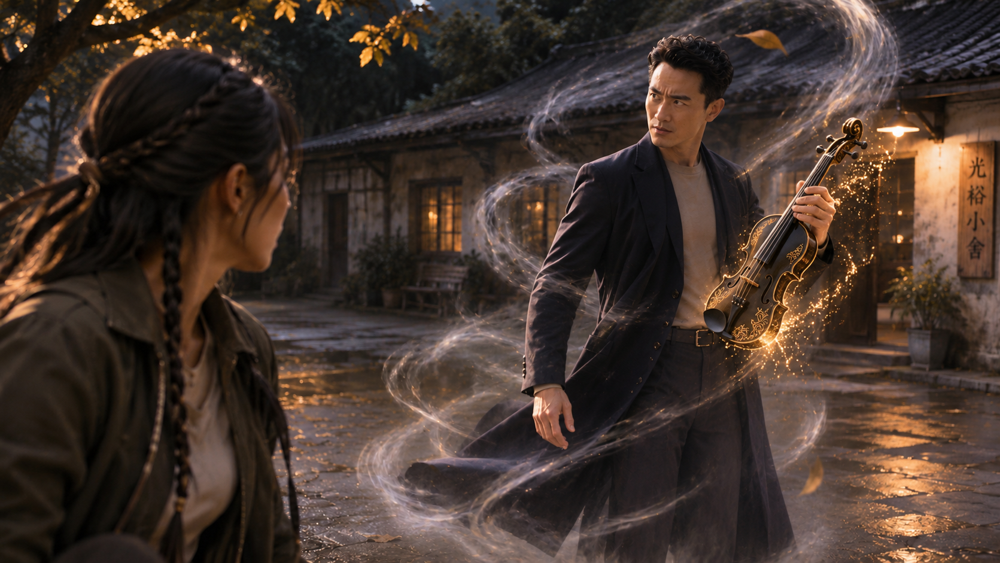
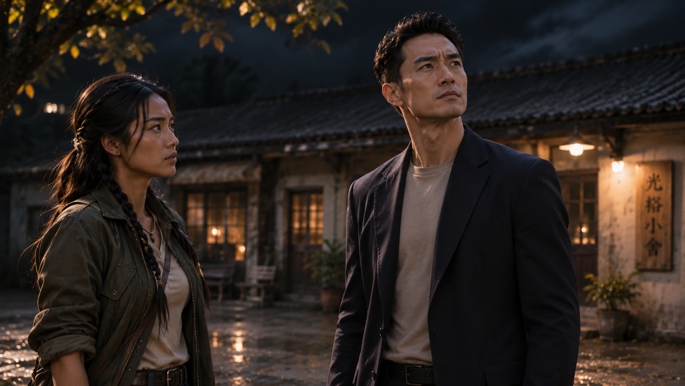
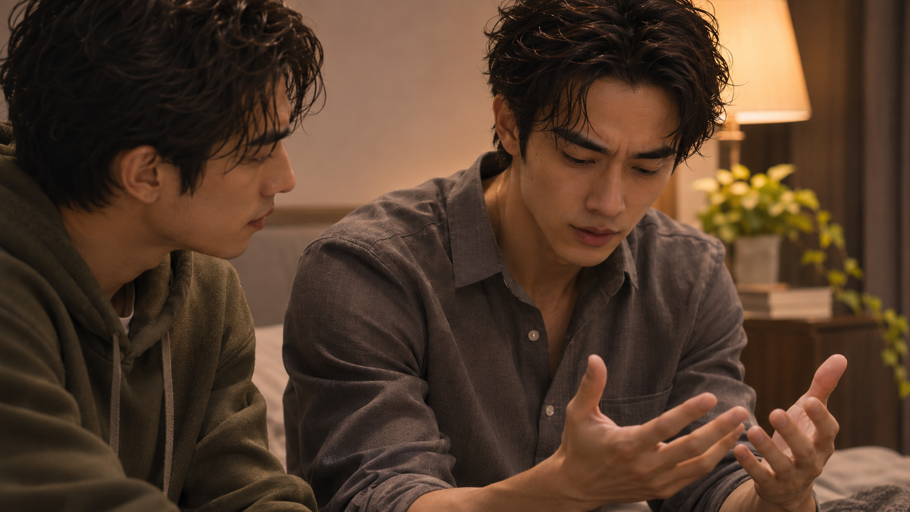
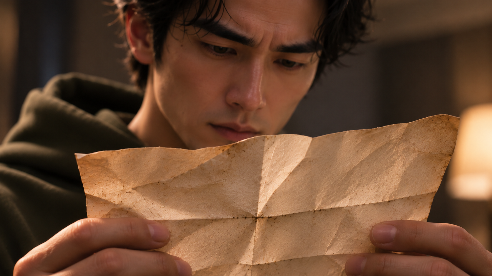
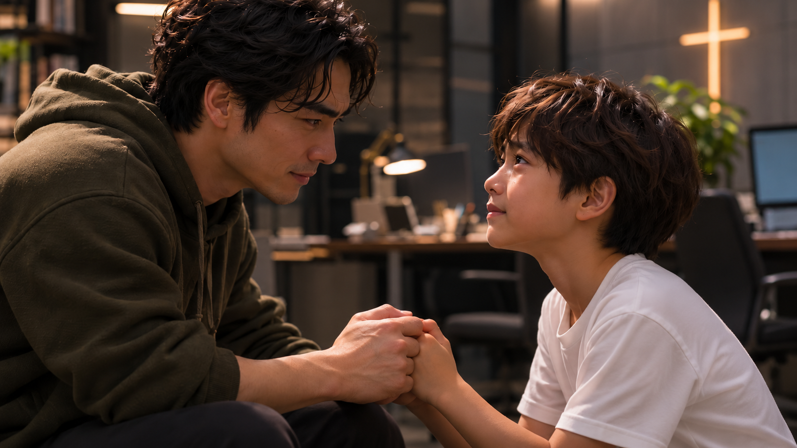
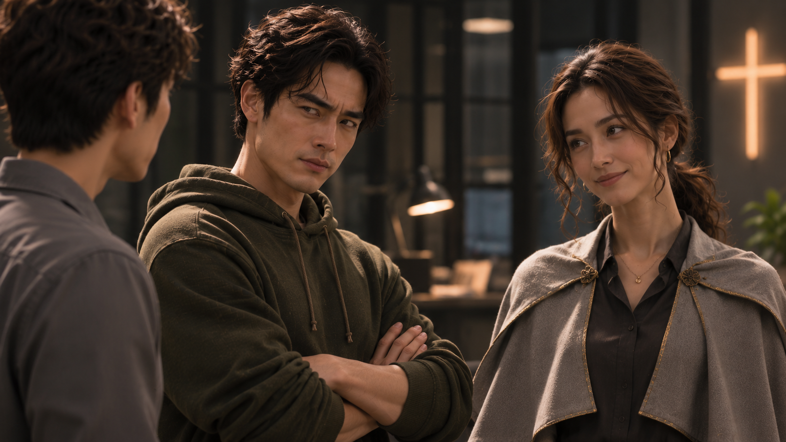

WHITE MAGIC ART STUDIO
第二十二章
神秘的信紙
同一時間・桃園・裕光小舍
夜色漸深。
裕光小舍外，少芬單膝跪地，右手平貼在地面上。
她閉著雙眼。
一道淡淡的土黃色光芒，從掌心滲入地底。

土之聖術沿著岩層與泥土向外擴散。道路上的車輛、遠處行人的腳步，以及地下細微的震動，都化為一道道模糊的感應，傳回她的意識之中。
片刻後，一陣強風突然掠過庭院。
少芬睜開眼。
風在半空中盤旋，逐漸凝聚成人形。
陳建霖從氣流中現身，雙腳平穩落地。他手中的黑金小提琴隨即化為細碎金光，消散在夜色裡。

「怎麼樣？」建霖問。
少芬收回右手，站起身。
「我把附近都確認過了。以這裡為中心，半徑五公里內，目前沒有發現惡魔或其他異常動靜。」
「我剛才從空中偵查，也沒有發現任何可疑的氣息。」
建霖抬頭望向遠方。
「看來魔君沒有追過來。」
「這不是好事嗎？」
「是好事。」
他皺起眉。
「但我不認為事情會這麼簡單。」
少芬看了他一眼，沒有再追問。
「對了，詩涵怎麼樣了？」
「已經穩定下來了。多虧景皓和他弟弟及時治療，現在只需要好好休息。」
「真不愧是木之聖術師。」
少芬鬆了口氣，隨即像是想起什麼，眼睛一亮。
「欸，說到景皓的弟弟……」
「嗯？」
「他也太帥了吧！」
建霖轉頭看她。
「……什麼？」
「你可以幫我問問他是不是單身嗎？」
建霖沉默了兩秒。
「少芬。」
「幹嘛？」
「現在是說這個的時候嗎？」
「問一下又不會怎樣。」
「妳剛才不是說，附近沒有異常動靜？」
「對啊。」
「那麻煩妳再去確認學校那邊的情況。」
少芬的笑容瞬間垮了下來。
「蛤？我才剛回來耶。」
「拜託了。」
建霖沒有跟著開玩笑。
「炎君沒有追來，不代表他已經放棄。學校那邊也還有許多事情需要確認。」
少芬看著他的神情，終於收起玩笑。
「……知道了。」
她轉身準備離開。
「少芬。」
「嗯？」
建霖望著遠處的夜空。
「今天發生的事，恐怕還只是開始。」
少芬沒有回答。
「我們不能再讓任何人毫無準備地面對那些東西。」
他的聲音不大，卻十分堅定。
少芬輕輕點頭。

「放心吧。」
她將手按向地面。
「我會再仔細確認一次。」
地面泛起淡淡的土黃色光芒。
下一瞬，少芬的身影消失在庭院深處。
建霖獨自站在原地。
晚風拂過他的衣角。
他望著城市的方向，久久沒有移開目光。
城市之光地下教會・客房
浴室裡傳來持續的水聲。
這間客房採用簡約的現代設計，牆面以柔和的米灰色為主，搭配木質家具與暖色燈光。
房間中央擺著一張寬大的雙人床。
景毅已經洗完澡，換上一件整齊的灰色襯衫，靠坐在床頭。
昱鎧也盥洗完換上乾淨的衣服，正安穩地睡在他身旁。
男孩的頭輕輕靠著叔叔的手臂。
景毅低頭望著他。
下午在學校發生的一切，彷彿還停留在眼前。
他伸出手，輕輕整理昱鎧額前的頭髮。
這個孩子，明明幾天前對他而言還是個陌生人。
如今卻能毫無防備地睡在自己身旁。
景毅的嘴角浮現一絲淡淡的笑意。
原來，當叔叔是這種感覺。
浴室的水聲停了。
過了一會兒，門被推開。
「他睡著了？」
景皓壓低聲音問道。
「嗯，剛睡著。」
景毅低頭看了昱鎧一眼。
「本來還說不累，結果講沒幾句就睡了。」
「有跟他好好聊聊嗎？」
「聊了一些。」
「例如？」
「家裡的事、老爸的事……」
景毅停頓一下。
「還有你的壞話。」
景皓忍不住笑了。
「喂，什麼壞話？」
「你自己去問他啊。」
「真是的……」
景皓拿著毛巾，隨手擦了擦濕漉漉的頭髮。
他的目光落在景毅身上。
「不過，你這樣穿果然比較適合你。」
「蛤？」
「素色襯衫啊。」
景皓打量著弟弟。
「雖然你穿格子襯衫也很合身，但果然這種整齊一點的款式比較符合你的個性。」
「喔，這只是教會提供的衣服……」
景毅說到一半，忽然抬起頭。
下一秒，他整個人僵住。
「……哇靠腰勒！梁景皓！」
「幹嘛啦？」
「你至少穿條內褲再出來吧！」
景皓低頭看了自己一眼，這才慢條斯理地拿起放在床邊的衣服。
「蛤？我們一起長大而且還是學醫的，現在是在害羞什麼？」
「這不是害不害羞的問題！」
「以前在美國讀大學，我們不是也住在一起？」
景毅原本還想反駁。
卻在聽見這句話時，突然安靜下來。
「……那時候。」
「嗯？」
「我們還只是…室友。」
景皓的動作微微停住。
景毅低頭看著熟睡的昱鎧。
「至少對我來說，是這樣。」
房間安靜了一瞬。
景皓看著弟弟。
隨後，輕輕笑了。
「哇塞……」
「幹嘛？」
「我只知道神癒花能治好很多傷，沒想到連人的個性都能改變。」
景毅瞥了他一眼。
「你又想說什麼？」
「我沒記錯的話，你不久前還想殺我吧？」
「……」
景毅沉默片刻。
「也許吧。」
他輕輕撫過昱鎧的頭髮。
「但也可能，只是我太晚明白一些本來就該知道的事。」
景皓沒有接話。
他穿好衣服，走到床邊坐下。
兩人沉默了一會兒。
「景毅。」
「嗯？」
「我想，我欠你一句謝謝。」
景毅轉頭。
「謝什麼？」
「今天下午的事。」
景皓望向熟睡的兒子。
「不管是在花店，還是後來面對炎君的時候……你都一直在保護昱鎧。」
「還有詩涵。」
「那是我應該做的。」
「我知道。」
景皓點點頭。
「但我還是想跟你說。」
他停了一下。
「謝謝你。」
景毅沒有立刻回答。
景皓看著昱鎧，語氣漸漸柔和。
「其實我之前一直很擔心。」
「擔心什麼？」
「擔心你沒辦法接受他。」
景毅微微一怔。
「畢竟……這十年發生了太多事。」
景皓低頭看著自己的雙手。
「我甚至沒有想過，有一天我們會像現在這樣，坐在一起。」
景毅靜靜聽著。
「還有一件事。」
景皓轉頭看他。
「我欠你一句對不起。」
「……又怎麼了？」
「關於昱鎧。」
景皓說。
「你之前說得對。」
「他的事，還有我們之後該怎麼辦，我確實可以跟你商量。」
他苦笑了一下。
「我好像太習慣自己決定所有事情。」
景毅挑起眉毛。
「這點我只能說……」
「嗯？」
「是家族遺傳。」
景皓愣了一下。
隨後忍不住笑出聲，又趕緊壓低音量。
「我認同。」
景毅也笑了。
但笑意漸漸淡去後，他忽然開口。
「哥。」
「嗯？」
景皓看向他。
「你知道……為什麼我今天在大家面前，透露你是木翼的身份嗎？」
景皓臉上的笑容慢慢收斂。
「景毅……」
「你先聽我說完。」
景毅稍微坐直身體。
「我知道，你曾經向拉比請求，讓祂收回你的木翼身分。」
景皓垂下眼。
「而且祂也答應了。」
「……嗯。」
「可是哥。」
景毅看著他。
「我一直在想，這件事真的就代表你不再是祂所揀選的人了嗎？」
景皓沒有回答。
「你知道的，我是術器使。」
景毅低頭望著自己的手。
「術器的力量，跟我們對拉比的信心有關。」

「我知道。」
「可是我的信心，其實沒有你想像中那麼穩定。」
景皓微微抬頭。
「有時候，我很清楚自己需要祂。」
景毅緩緩說道。
「但有時候，我又只想靠自己。」
他停頓片刻。
「尤其是這十年。」
房間裡只剩下空調低沉的聲音。
「我一直覺得，只要自己夠努力，就不需要依靠任何人。」
景毅苦笑。
「結果呢？」
他望向哥哥。
「昨天你也看到了，我差點連自己的術器都失去了。」
景皓的神情微微一變。
「就像你說的，我讓恨意佔據了自己。」
「……」
「那個時候，我真的以為自己什麼都沒有了。」
景毅低下頭。
「可是它最後還是在。」
他緩緩握起手掌。
「而且今天下午，當我站在你們面前，想保護你們的時候……」
他停了一下。
彷彿仍然難以相信。
「哥，我從來沒有感受過那麼強大的力量。」
景皓想起了當時的情景。
巨大的術之木在烈焰中升起。
景毅站在眾人前方，硬是擋住了炎君的攻擊。
那樣的力量，甚至超出了他對弟弟的認識。
「確實我也很驚訝。」景皓輕聲說。
景毅笑了一下。
「對吧？」
但他很快又認真起來。
「所以我就在想……」
「如果連我這種信心搖搖晃晃的人，拉比都沒有放棄……」
他看著哥哥。
「那祂真的會因為你最痛苦的時候，說了一句不想再當木翼，就真的讓你失去這個身份嗎？」
景皓沉默了。
「我不是說祂沒有答應你的請求。」
景毅補充道。
「也不是說我知道祂現在到底怎麼看這件事。」
他輕輕搖頭。
「我只是覺得……」
「祂對你的心意，應該不會只有那個身分而已。」
景皓低著頭。
許久，才緩緩開口。
「我懂你的意思。」
他望向昱鎧。
「可是我真的……」
話還沒說完。
景皓忽然停住。
他抬起頭，望向房門。
景毅察覺他的異樣。
「怎麼了？」
景皓沒有立刻回答。
一股奇怪的氣息，正從房門外隱隱傳來。
很微弱。
卻莫名熟悉。
他的虹膜泛起淡淡綠光。
「……有東西。」
景毅立刻坐直。
「惡魔？」
「不像。」
景皓皺起眉。
「也不是邪氣。」
「那是什麼？」
「我不知道。」
他慢慢站起身。
「只是……有種很熟悉的感覺。」
就在這時——
叮咚！
景毅的手機突然響了。
他低頭看向螢幕。
是亞云傳來的訊息。
景皓則已經走到房門前。
他握住門把，緩緩將門打開。
走廊裡空無一人。
柔和的燈光照在地毯上。
景皓探頭看了看左右兩側。
沒有腳步聲。
也沒有任何人離開的動靜。
「奇怪……」
他正準備關門。
視線卻忽然停在腳邊。
一隻小小的紙鷹，靜靜躺在門口。
景皓蹲下身。
紙鷹摺得十分精巧，翅膀上的折痕細緻得不像普通摺紙。
他伸手將它撿起。
指尖碰觸紙面的瞬間，那股熟悉的氣息更加清晰。
「這是……」
他將房門關上。
床上的景毅卻突然開口。
「哥。」
景皓沒有回頭。
他正仔細端詳手裡的紙鷹。
「哥，我覺得你得先看一下這個。」
景毅盯著手機，神情逐漸凝重。
景皓卻已經開始拆開紙鷹。
紙張沿著原本的折線，一層層展開。
最後，露出一行簡短的字。
「我最多只能幫到這裡。」
下方，還寫著一個地址。
景皓的目光停住。

「……這個地方？」
那是一個他再熟悉不過的地址。
他下意識想再看清楚一些。
然而，紙張忽然輕輕顫動。
「什麼？」
景皓猛地收緊手指。
紙面卻自行沿著細密的紋路裂開。
轉眼間，化為無數細小的紙屑。
那些碎片在半空中旋轉，隨即消失得無影無蹤。
景皓怔怔望著空蕩蕩的掌心。
「到底是誰……」
「梁景皓！」
景毅突然提高音量。
景皓猛地回頭。
「小聲一點，昱鎧還在睡！」
「你先過來看！」
景毅的神情已經完全變了。
景皓快步走到床邊。
「怎麼了？」
「亞云剛剛傳照片給我。」
景毅將手機轉向哥哥。
螢幕上是一個熟悉的地下空間。
但景皓一時沒有認出來。
「這是哪裡？」
「我們家。」
「……什麼？」
「後院的地下室。」
景皓愣住。
景毅深吸一口氣。
「自從媽過世、你離開家以後，爸就在那裡種了一棵自己的『術之木』。」
景皓的表情逐漸凝重。
「忘憂木？」
「嗯。」
景毅低頭看著照片。
「他把一些不願意再清楚回想的記憶，寄放在那棵樹裡。」
「我以前一直很討厭那棵樹。」
他苦笑了一下。
「覺得那只是老爸逃避現實的方式。」
景皓沒有說話。
「可是……」
景毅抬起頭。
「現在整棵樹都不見了。」
景皓怔住。
「……不見了？」
「對。」
景毅將照片放大。
地下空間裡，只剩下空蕩蕩的地面。
「亞云說，她進去的時候就是這樣。」
「沒有任何打鬥的痕跡，也沒有其他異常。」
景毅的聲音愈來愈沉。
「可是忘憂木不會無緣無故消失。」
景皓盯著螢幕。
「你想想看.….….誰會突然把這十年來不敢回想的記憶，一次全數灌進腦袋。」
景毅停頓了一下。
「哥，你覺得他為什麼突然要這麼做？」
景皓沒有回答。
但他的臉色已經變了。
「……爸現在人在哪裡？」
「不知道。」
景毅搖頭。
「亞云和梁家班的人正在找他。」
「醫院呢？」
「不在。」
「家裡？」
「也沒有。」
景毅握緊手機。
「我不知道他究竟想做什麼。」
他望向哥哥。
「可是我有種很不好的預感。」
景皓緩緩站起身。
他想起魔君沒有追上來這不合理的反應，
他想起剛才那隻紙鷹。
以及上面的地址。
一股寒意沿著背脊升起。
「……可惡。」
景毅抬頭。
景皓低聲罵道：
「那個老頭子。」
他握緊拳頭。
「又想一個人決定所有事情。」
景毅沉默片刻。
「我想我們在想同件事…」
景皓沒有立刻回答。
他望著房門。
「我想，我大概知道該去哪裡找他。」
景毅的神情一變。
「那還等什麼？」
景皓轉過頭，看向熟睡的昱鎧。
「可是昱鎧……」
他停了一下。
「景毅，你可以先——」
「休想。」
景皓一愣。
「我還沒說完耶。」
「你不用說，我知道你想講什麼。」
景毅直接打斷他。
「你想叫我留在這裡照顧昱鎧，然後自己去找老爸，對吧？」
景皓沒有否認。
景毅看著他。
「哥。」
他的聲音很平靜。
「那個笨蛋……」
他停了一下。
「也是我的爸爸。」
景皓怔住。
景毅的眼神沒有絲毫動搖。
「所以這次，你別想把我留下來。」
兄弟兩人對望了片刻。
最後，景皓輕輕笑了。
「……好。」
他點頭。
「那我們趕快出發。」
景毅終於鬆了口氣。
景皓轉身，輕輕拍了拍昱鎧的肩膀。
「昱鎧。」
男孩皺了皺眉。
「嗯……？」
「昱鎧，醒醒。」
「爸爸……？」
昱鎧揉著眼睛，迷迷糊糊地坐起身。
景皓替他整理好衣服。
「走吧。」
「去哪裡？」
「爸爸有點事情要跟建霖叔叔商量。」
昱鎧還沒完全清醒，只是點了點頭。
景毅下床，拿起自己的手機。
兩兄弟交換了一個眼神。
沒有再多說什麼。
城市之光地下教會・辦公室
建霖正在辦公桌前整理資料。
聽見敲門聲，他抬起頭。
「請進。」
門被推開。
景皓牽著昱鎧走了進來。
景毅跟在後方。
「景皓？」
建霖有些意外。
「怎麼了？你們不是才剛休息嗎？」
「建霖。」
景皓走到桌前。
「有件事想拜託你。」
「你說。」
「能不能先幫我照顧昱鎧？」
建霖一愣。
「當然可以。」
他看了看兩兄弟。
「不過……這麼突然，你們要去哪裡？」
景皓沉默片刻。
「我懷疑我爸出事了。」
「你爸？」
「嗯。」
景皓點頭。
「我們擔心他可能一個人去找魔君。」
「什麼？」
建霖立刻站起身。
「你確定嗎？」
「我爸突然失蹤，魔君又偏偏沒有追上來……」
景皓皺緊眉頭。
「我不敢說這是不是巧合，但我不能當作什麼事都沒發生。」
景皓皺著眉頭說。
「這件事我們不能等到確定後才採取行動。」
一旁的昱鎧聽見這裡，終於完全清醒。
「爸爸？」
景皓低頭。
「怎麼了？」
「你們要去找爺爺？」
「嗯。」
「那我也要去！」
景皓的表情微微一變。
「昱鎧……」
「我也要去！」
男孩緊緊抓住他的手。
「我可以幫忙！」
景皓蹲下身，與兒子平視。
「這次不行。」
「為什麼？」
「因為可能會很危險。」
「可是我也會聖術啊！」
「我知道。」
景皓輕輕握住他的雙手。
「但這跟你會不會聖術沒有關係。」
昱鎧咬著嘴唇。
「我不要。」
他的聲音開始顫抖。
「我不要再跟你分開了。」
景皓的心微微一緊。
他看著兒子。
這個孩子今天才剛經歷那麼多事。
如今卻又得聽見父親準備離開。
景皓伸手，輕輕撫摸他的頭。
「昱鎧。」
男孩低著頭。
「爸爸有件事情，還沒有跟你好好說。」
昱鎧緩緩抬頭。
景皓沉默了一下。
「碧雲阿姨……已經不在了。」
昱鎧怔住。
「……什麼？」
景皓的聲音放得很輕。
「今天下午，我們找到她的時候，已經來不及了。」
男孩睜大眼睛。
許久，才低聲問：
「……是魔君嗎？」
「爸爸還不知道。」
景皓沒有迴避他的目光。
「但我們會想辦法查清楚。」
昱鎧的眼眶漸漸泛紅。
景皓輕輕握住他的手。
「所以，爸爸現在更不能讓你跟著去冒險。」
「可是……」
「我知道你很擔心。」
景皓停了一下。
「我也很擔心爺爺。」
昱鎧望著他。
「所以我得去確認他是不是平安。」
景皓將兒子的手輕輕放在自己胸前。
「你可以幫爸爸一個忙嗎？」
昱鎧吸了吸鼻子。
「……什麼忙？」
「留在這裡。」
景皓柔聲說。
「好好休息，待在建霖叔叔身邊。」
「這樣爸爸才能放心去找爺爺。」
昱鎧低下頭。
過了很久。
「……那你會回來嗎？」
景皓的喉嚨微微一緊。
他沒有立刻回答。
最後，輕輕握緊兒子的手。

「我一定會回來。」
昱鎧望著他。
「真的？」
「嗯。」
景皓點頭。
「我會帶爺爺一起回來。」
男孩的眼淚終於滑落。
他伸手抱住父親。
景皓輕輕拍著他的背。
沒有催促。
直到昱鎧慢慢鬆開手。
「……那你要小心。」
「好。」
景皓替他擦去眼淚。
「你也是。」
他站起身，轉向建霖。
「建霖。」
「嗯。」
「昱鎧就拜託你了。」
建霖走到男孩身旁。
「放心吧。」
他輕輕將手放在昱鎧肩上。
「我會照顧好他的。」
景皓點頭。
「謝謝。」
「不過……」
建霖看向兩兄弟。
「你們知道要去哪裡找梁先生嗎？」
景皓想起了那張紙鷹。
那個地址仍然清楚地留在腦海裡。
「我有個地方想去確認。」
「有把握嗎？」
「沒有十足的把握。」
景皓坦白回答。
「但我覺得，那裡一定有什麼線索。」
建霖看著他，沒有繼續追問。
「好。」
他拿起桌上的電話。
「我幫你們安排車子。」
「麻煩你了。」
景皓正準備轉身。
一道身影卻突然出現在門口。
宋瑞恩。
她站在那裡，目光依序掃過景皓與景毅。
接著，抬起雙手比起手語。
「我要跟你們一起去。」
景皓愣了一下。
「瑞恩？」
她點頭。
「不行。」
景皓幾乎立刻回答。
「我們連接下來會遇到什麼都不知道，太危險了。」
瑞恩看著他。
沒有退讓。
她再次比出手語。
「正因為危險，我才更應該去。」
「可是……」
景皓還想說些什麼。
瑞恩卻先一步抬起手，示意他等一下。
她的動作不快。
每一個手勢卻都十分清楚。
「你剛剛不是才說，不想讓父親獨自面對危險嗎？」
景皓怔住。
瑞恩繼續比著。
「那你呢？」
他沒有回答。
「你是不是也打算，把所有危險都留給自己和弟弟？」
景皓一時語塞。
瑞恩看著他。
眼神堅定，卻沒有責備。
「景皓。」
她的雙手再次動了起來。
「拉比從來沒有要我們孤軍奮戰。」
「不同家族的聖術師，擁有不同的能力。」
「我們之所以能站在一起，不就是為了彼此扶持嗎？」
景皓靜靜望著她。
瑞恩停頓了一下。
接著，緩緩比出最後一句。
「你或許已經不再是木翼。」
「但那不代表，你不能擁有夥伴。」
房間裡安靜了下來。
景皓望著她。
許久，才輕輕笑了。
那笑容裡，帶著一絲無奈。
也帶著感激。
「……你們怎麼一個比一個講話啊。」
景毅在旁邊輕輕哼了一聲。
「昱鎧剛剛跟我說你在家裡會學手語，原來這就是原因？」
景皓瞥了他一眼。
「噢閉嘴啦！」
瑞恩微微一怔。
她看了景皓一眼，隨後垂下目光，嘴角悄悄揚起。
景皓假裝沒看見。
他嘆了口氣。

「好吧。」
他重新看向瑞恩。
「那就拜託你了。」
瑞恩點頭。
隨後，她伸出手。
景皓看著她，稍稍遲疑，隨後伸手握住。
她的手很快鬆開。
景皓卻仍望著她，直到瑞恩轉身離去，才收回目光。
景毅也跟了上去。
景皓留在原地，最後看了昱鎧一眼。
「爸爸走嘍。」
男孩點點頭。
「……嗯。」
「乖乖聽建霖叔叔的話。」
「知道了。」
景皓輕輕揉了揉他的頭髮。
昱鎧抬起臉。
「爸爸。」
「嗯？」
「找到爺爺以後……」
他停了一下。
「可以先跟他說，我想見他嗎？」
景皓怔住。
隨後，溫柔地笑了。
「好。」
他點頭。
「我一定幫你轉告。」
昱鎧終於露出一點笑容。
景皓站起身，轉向建霖。
「那我們出發了。」
建霖點頭。
「路上小心。」
他停了一下。
「我會為你們禱告。」
「謝謝。」
景皓轉身走向門口。
走出辦公室前，他再次回頭。
昱鎧站在建霖身旁，正努力向他揮手。
景皓也抬起手，輕輕揮了一下。
隨後，轉身離去。
走廊裡，景毅與瑞恩已經在等他。
景毅看了哥哥一眼。
「準備好了？」
景皓點頭。
「嗯。」
三人一同朝出口走去。
景皓的腦海裡，再次浮現那隻紙鷹。
還有紙上那句簡短的話。
「我最多只能幫到這裡。」
究竟是誰送來的？
為什麼知道他們現在的位置？
又為什麼偏偏在這個時候，將那個地址交到他手上？
景皓沒有答案。
但至少，他知道下一步該往哪裡走。
他抬頭望向走廊盡頭。
腳步沒有停下。
這一次，他的身旁不只有自己一個人。